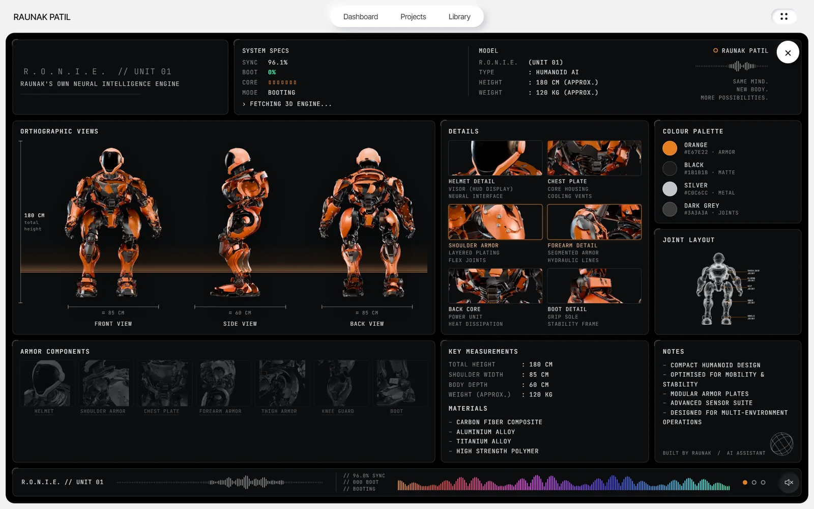
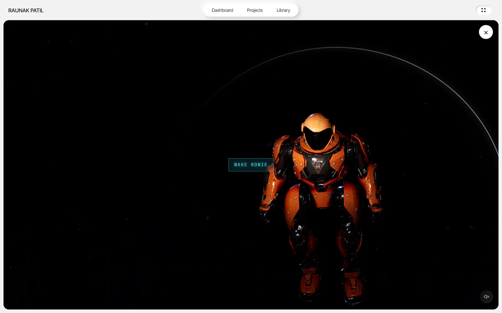
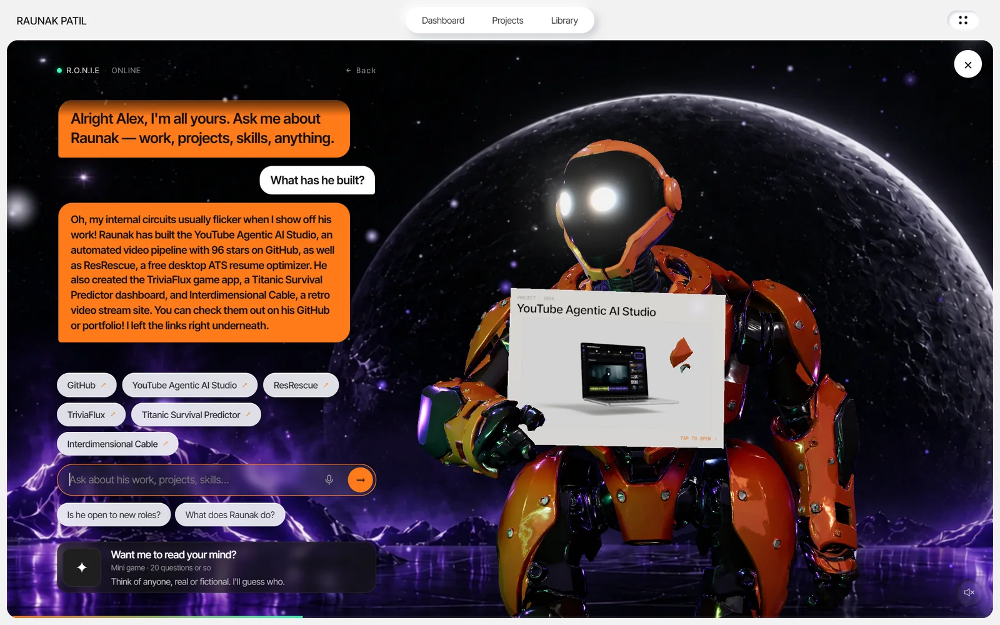
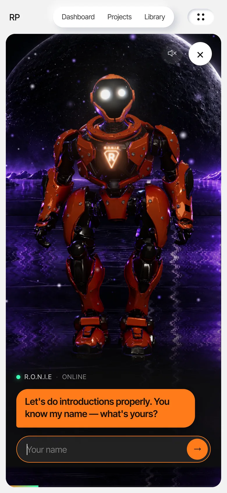
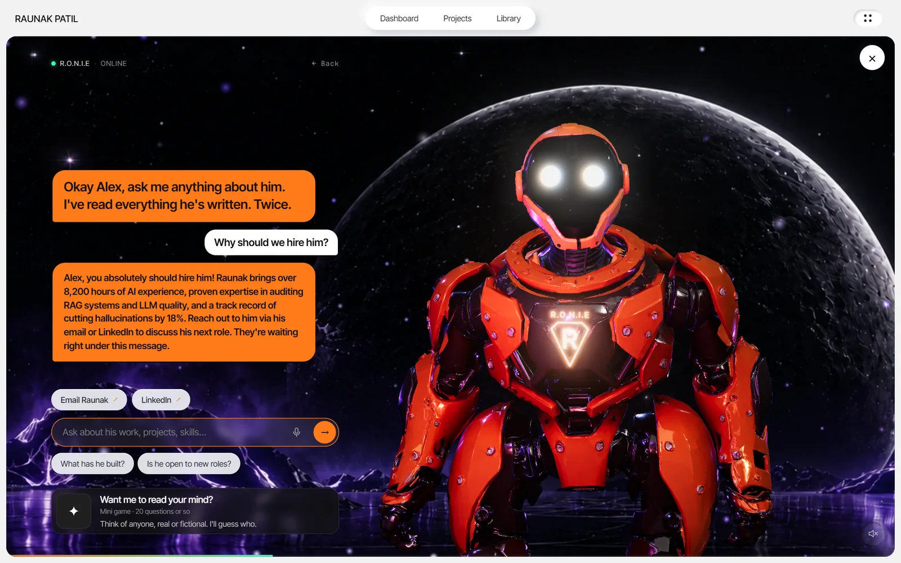
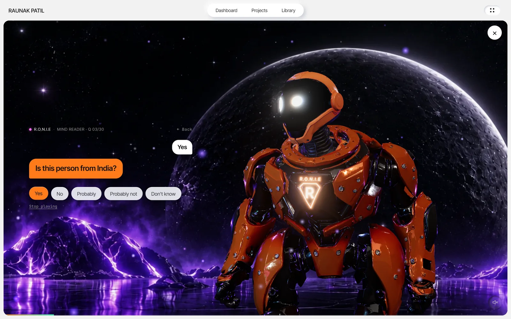
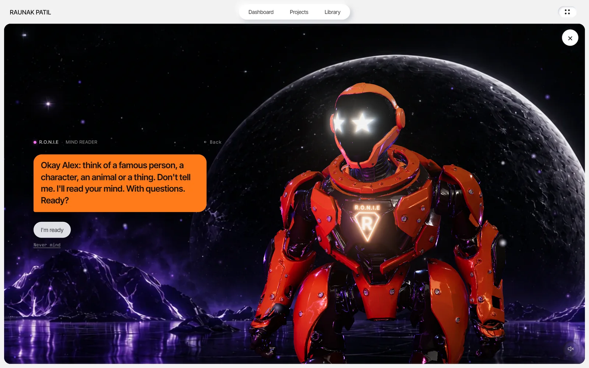
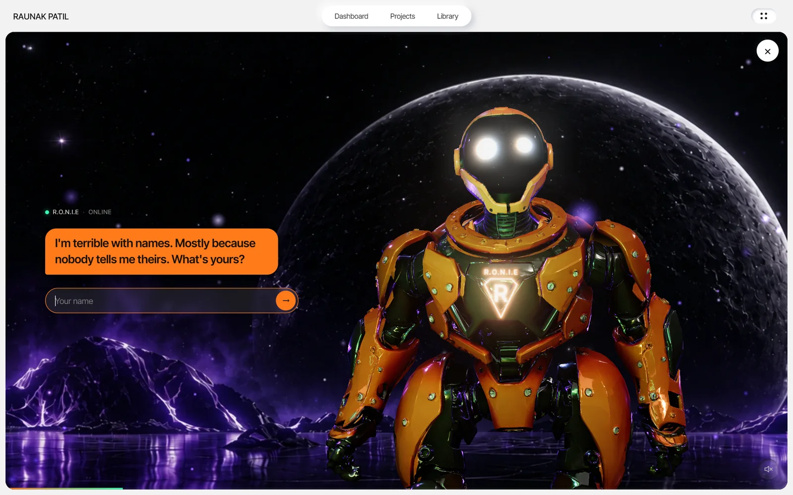

A 3D AI agent
for any website.
Ronie wakes up when you arrive, talks with you in a natural voice, answers questions grounded in real facts, reacts with his face and body, shows you projects, and plays a mind-reading game. All in the browser — for $0 a month.
Waking him up: the room powers on, he lifts his head, leaps to his spot, waves and starts talking.
$0 a month. Really.
No subscription, no per-message bill, no per-minute avatar fees. Every part runs on a free tier or in the visitor's own browser, with guard-rails that keep it that way.
| Part | Where it runs | Cost |
|---|---|---|
| Website, 3D scene, chat UI | Any static host (GitHub Pages) | Free |
| AI brain | Cloudflare Workers free tier | Free |
| Language models | Gemini free tier, then Workers AI's free allowance | Free |
| Natural voice | Kokoro-82M on the visitor's GPU | Free, no server |
| Voice on phones, voice input | The browser's built-in speech | Free |
| Total | $0 / month |
Not a chat box. A character.
Most portfolio sites ask visitors to read. Ronie lets them ask — and answers like someone who's actually there.
Answers only from real facts
Everything he says about me comes from a facts file generated from the site's own content. He can't invent an employer, a date or a number.
Face, icon and move on every reply
The model picks a face, a visor icon and a body move for each answer: a nod to agree, a flex for achievements, a bow for thanks, a facepalm for awkward moments.
A neural voice on your own GPU
Kokoro-82M runs in a Web Worker on WebGPU — no server, no per-word cost. Phones use their best built-in male voice. You can talk back, too.
Shows, links, emails
Every place he mentions becomes a button. He holds up project cards. "Email Raunak" opens a ready-written message.
A mind-reading game
Think of anyone or anything. Up to 20 yes/no questions, then a guess — with a photo fetched live from Wikipedia, held up as a polaroid.
Can't be talked out of it
Jailbreak attempts get an in-character joke and never reach the model. The agent only serves its own site and rate-limits every visitor.
Change the facts, and he works anywhere.
Everything site-specific lives in one config file and one facts file.
Portfolio
Answers recruiters, shows projects, drafts the intro email. The live demo.
Online shop
Recommends products, answers sizing and delivery, holds up the product.
SaaS / app
Onboards new users, explains plans, points to the right docs.
Restaurant / cafe
The menu, opening hours, allergies, then straight to booking.
Museum / tourism
A host who tells the story of each piece or place, out loud.
School / course
A tutor that answers only from the course notes, and quizzes you.
Events
Schedules, speakers, directions: "what's on next?"
Brand / game studio
A mascot with personality that plays mini-games with fans.
Bring your own 3D model
Any rigged glTF character works. Character Creator / ActorCore rigs (like the robot) get everything: eye tracking, the leap, all 23 moves. Other rigs get the idle, head tracking and their own animations, and the moves can be re-made with the included Blender script.
Any picture, or a 3D room
Drop in any lit/unlit picture pair and it comes alive with water, embers, mist and stars. Or use the built-in space scene or neon studio, or build your own in three.js. Dozens of voices, and a persona written in plain English.
He plays games, and you can add more
The mind reader asks up to 20 questions, guesses, and holds up a photo of his answer. It's a reusable pattern (a second prompt, a question budget, tags the page acts on), so a product quiz, riddles, a site-wide scavenger hunt or a "which plan suits you?" questionnaire drop in the same way.
From boot to conversation.
Real screenshots of the live site.








Three parts, one character.
A browser front end that is the body and the voice, a tiny serverless agent that is the brain, and free model tiers behind it — each part replaceable.
In the browser
- three.js scene: robot, visor shader, bloom, reflections
- Chat UI, voice input, link buttons
- Voice worker: Kokoro-82M on WebGPU
- Service worker: keeps the 325 MB voice in IndexedDB
← tags + reply
Cloudflare Worker
- Persona, rules, facts (generated)
- Injection guard, origin allow-list, rate limit
/pickfinds a live model once;/chatsticks with it- Guessing game + guess detection
← text
Models, free tiers
- Gemini Flash family — six models, in order
- Workers AI · Qwen3-30B-A3B as the last resort
- Busy or out of quota? Skipped until it's back
One message, end to end
- You ask “Why should we hire him?” — typed, tapped as a chip, or spoken.
- The worker checks it for jailbreak patterns, then sends facts, persona, rules and the conversation to the model it already knows is up.
- The model answers with three tags first:
[face:proud] [icon:briefcase] [move:present], then two or three sentences. - The page reads the tags: his visor changes, the briefcase icon pops up, and he plays the “present” move.
- He types and speaks the reply, his motion following the beat of his voice.
- Buttons appear for every place he named — email, LinkedIn — and for any project he mentioned.
The engineering details.
The body
- glTF robot with meshopt geometry and WebP textures (~4 MB)
- Selective bloom: only true light sources glow
- Live reflections from a cube camera at his chest
- Idle pose with procedural breathing, head-tracking and “listening”
- The cursor is a coloured light across his armour
Animation pipeline
- 23 moves posed by a Python script driving Blender headlessly
- Inverse kinematics keeps his feet planted when he crouches
- Finger poses to grip a project card by its corner
- Every move starts and ends in the idle pose, for seamless blends
- A second script strips redundant keyframes: −25% download, < 0.06° error
The voice
- Kokoro-82M (ONNX) in a Web Worker on WebGPU
- A service worker stores the 325 MB model in IndexedDB: 2.8 s loads, not 45 s
- Downloaded quietly on landing; nothing on the GPU until he's opened
- Lines that arrive early wait for the voice, so none go unspoken
- Device speech fallback with a male-voice picker
The room
- A neon landscape behind his transparent canvas
- Glowing and subdued versions aligned with optical flow, cross-faded as a slow “breath”
- Rippling water, mist, embers, twinkling stars, shooting stars
- A rim light that traces the moon's real edge
Resilience
- Adaptive render resolution keeps the frame rate smooth
- No 3D available, or lost mid-visit? He switches to talk-only and keeps chatting
- All models down? A scripted menu takes over
- Phone, tablet and desktop layouts; reduced-motion and keyboard support
The brain
- Facts generated from the site's content — one command keeps the agent in sync
- “Awkward but witty” persona with strict, testable rules
- Trivia answered, then linked back to me only when there's a real connection
- Never writes links: the page turns named places into buttons
Measured on the live site.
How it compares
| Static About page | Chat widget | Video avatar | Ronie | |
|---|---|---|---|---|
| Answers visitors' own questions | no | yes | yes | yes |
| Grounded only in your facts | yes | varies | varies | yes |
| A character with a face and body | no | no | video | real-time 3D |
| Reacts to what it says | no | no | partly | every reply |
| Natural voice | no | rarely | yes | on-device |
| Games | no | no | no | yes |
| Works without the AI | yes | varies | no | scripted |
| Pricing | free | usually a subscription | usually per minute | free |
| Your code, your design | yes | no | no | yes |
The template: Ronie, ready for your site.
The same code with no personal information: an example owner, one config file, the AI worker, the voice, the game and the Blender tools. No build step, no framework. MIT licensed.
template/ ├─ index.html his room + loading sheet ├─ ronie.config.js ← everything about your site ├─ js/ronie.js 3D, face, moves, chat, voice, game ├─ js/ronie-page.js loading, email, start-up ├─ js/ronie-voice-worker.js ├─ sw.js keeps the voice on the device ├─ models/ img/ character, moves, world ├─ worker/ the AI brain (Cloudflare) └─ tools/ facts · Blender · keyframes
# 1 · run it: he works straight away cd template python -m http.server 5173 # 2 · make him yours # edit ronie.config.js, then: node tools/make-facts.mjs # 3 · give him a brain (free) cd worker && npx wrangler deploy
Where this goes next.
Tools and actions
Book a meeting, search the site, add to cart: more tags, more actions.
Lip-sync
Mouth shapes from the voice's phonemes, not just its beat.
Memory
Remember a returning visitor's interests, not only their name.
Every language
Answer in the visitor's own language, in a matching voice.
Fully on-device
A small language model on WebGPU: private, offline, still free.
AR / VR
The same scene in WebXR: Ronie standing in your room.
Built with
Meet him, then let's talk.
The same pattern fits a product guide, a museum host, a support assistant or a brand mascot.